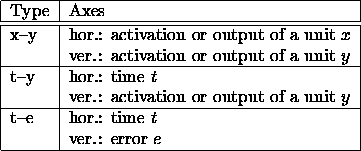
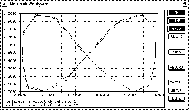

The network analyzer is a tool to visualize different types
of graphs. An overview of these graphs is shown in table  .
This tool was especially developed for the prediction of time series with
partial recurrent networks, but is also useful for regular feedforward
networks. Its window is opened by selecting the entry ANALYZER
in the menu under the button.
.
This tool was especially developed for the prediction of time series with
partial recurrent networks, but is also useful for regular feedforward
networks. Its window is opened by selecting the entry ANALYZER
in the menu under the button.
The x-y graph is used to draw the activations or outputs of two units against each other. The t-y graph displays the activation (or output) of a unit during subsequent discrete time steps. The t-e graph makes it possible to visualize the error during subsequent discrete time steps.


On the right side of the window, there are different buttons with the following functions:
:
This button is used to ''switch on'' the network analyzer. If the Network Analyzer is switched on, every time a pattern has been propagated through the network, the network analyzer updates its display.
:
The points will be connected by a line, if this button is toggled.
:
Displays a grid. The number of rows and columns of the grid can be specified in the network analyzer setup.
:
This button clears the graph in the display. The time counter will be reset to 1. If there is an active M--TEST operation, this operation will be killed.
:
A click on this button corresponds to several clicks on the button in the control panel. The number n of TEST operations to be executed can be specified in the Network Analyzer setup. Once pressed, the button remains active until all n TEST operations have been executed or the M--TEST operation has been killed, e.g. by clicking the button in the control panel.
:
If this button activated, the points will not only be shown on the display, but their coordinates will also be saved in a file. The name of this file can be specified in the setup of the Network Analyzer.
:
Opens the display control window of the Network Analyzer. The description of this window follows below.
:
Opens the Network Analyzer setup window. The description of the setup follows in the next subsection.
:
Closes the network analyzer window. An active M--TEST operation will be killed.